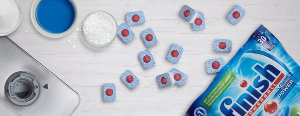
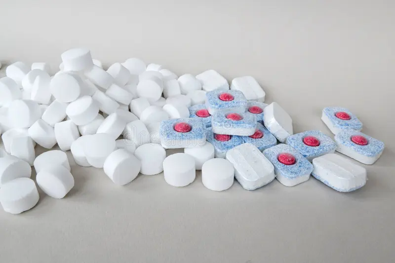

⏲ 30minutes
Dishwasher tabs are cubes with detergent to clean your dishes in the
dishwasher.
Normal dishwashtabs consists:
• Enzymes to break down proteines and sugars like starch.
• Non-ionic surfactants which are cleaning detergents
removing the dirt and fats off the plates.
• Sequestrants which capture limescale and magnesium from
the water. These prevent your dishes looking dull and white.
• Oxygen-based bleaches that remove stains from wine, tea,
coffee, etc.
• Fillers , because when pH changes happen too fast enzymes
stop working. Other substances mixing with each other might affect the
performance of the dishwashertabs. • Polymers for
effective rinsing.
Baking soda is a mild abrasive alkali that helps break down most
good-based and greasy stains.
Dishwasher salt Softens water by reacting with the calcium and
magnesium ions in the water.
Citric acid Helps clean dishes as it has a low pH and binds
with calciumions so they prevent from being attached to the surfactants
used in dishwashertablets.
Distilled vinegar is anti-bacterial, neutralizes odor and cuts
through grease and grime.
Grapefruit/Orange/Lemon essential oil Antibacterial properties
and nice smell.
However when the bakingsoda and citric acid mix, sodiumacitrate is
formed. Which is foodgrade substance. It softens water, cuts grease and
removes stains. The baking soda kan also react with the vinegar creating
sodiumacetate which can help buffer the pH and acts as a mild abrasive.

1. Put the dry ingredients in a big bowl
2. Add half the vinegar, and a few drops of essential oil. The
mixture will expand. (Not all, because it will fizz like crazy)
3. Mix until it no longer fizzes and the mixture is clumpy.
4. Fill the ice cube trays with the mixture and press them good.
5. Let them dry overnight
6. Store in an airtight container.